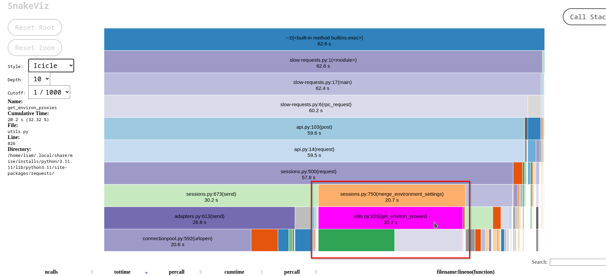
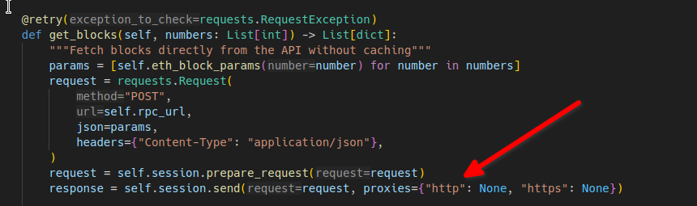
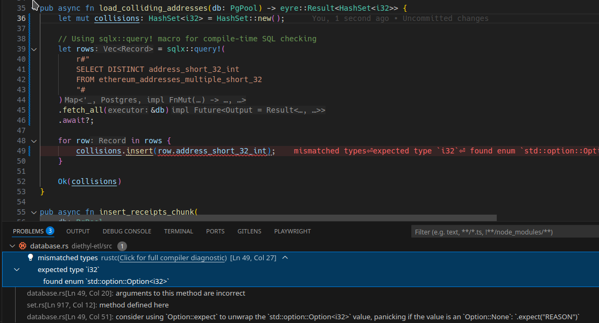
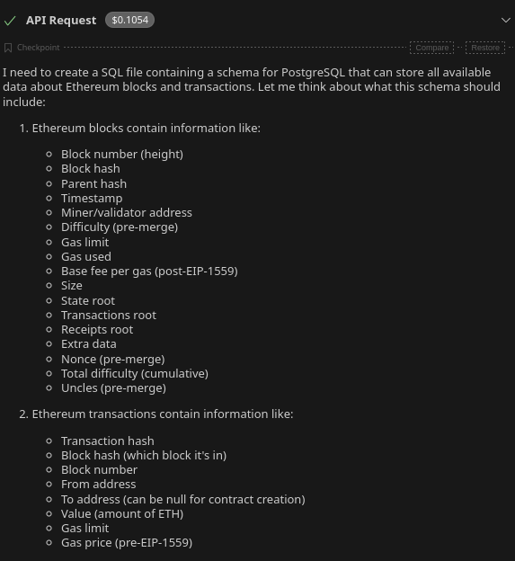
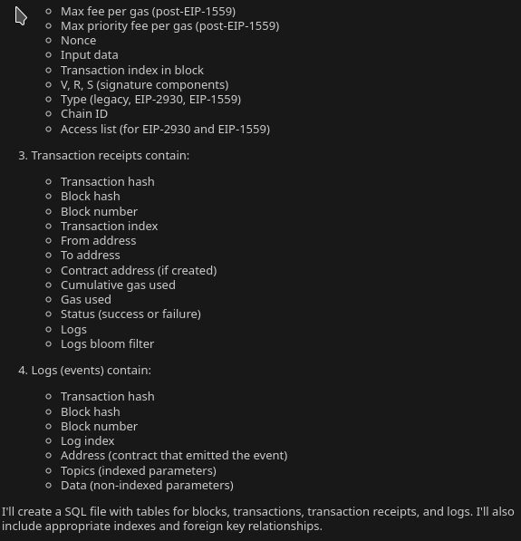
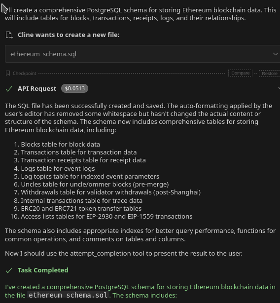
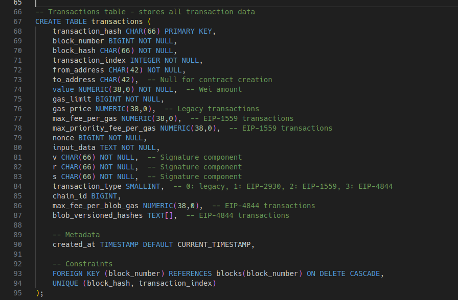
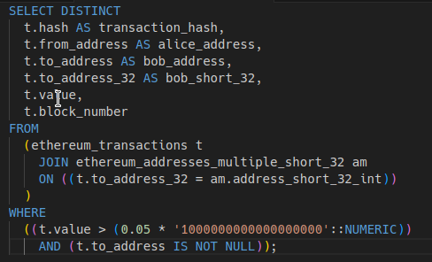
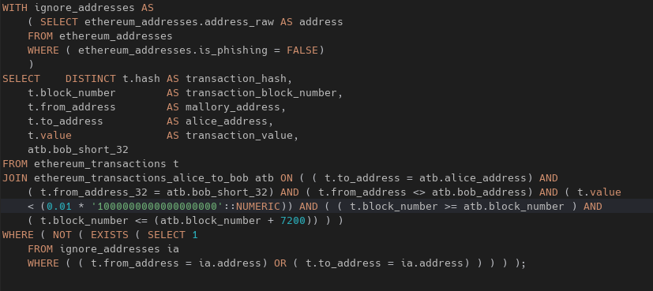
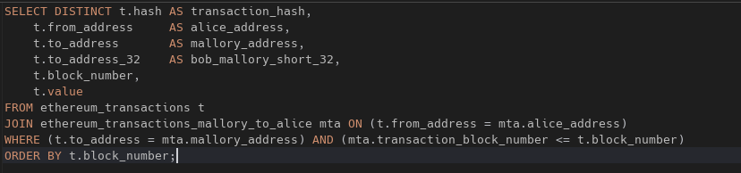

Fake it 'til they take it
exposing the poisoned address playbook
Background
How I fell down this rabbit hole
- I buy crypto peer-to-peer sometimes
- Forgot my Trezor one day — needed my wallet address
- Looked up the seller's recent transactions to find my own address
- Most blockchains are radically public — check
etherscan.io - Nearly got scammed in the process
- Scams are fascinating
- I am dangerously sidequest-prone
Terminology
Meet the cast
- Alice — the sender, the one initiating communication
- Bob — the receiver, the intended recipient
- Mallory — the malicious actor, actively tampering with messages
These are metasyntactic variables — placeholder names used in cryptography and security to describe protocol participants. They come from early academic papers and are codified in RFC 4949.
Why not just say "Person A"? Because giving each role a name makes complex protocols readable. When you see Alice, you instantly know: she's sending. Mallory? She's up to no good.
The Attack
The poisoned address playbook
1
Alice sends crypto to Bob — a normal, legitimate transaction
↓
2
Mallory sees this on the public blockchain and notes Alice's address
↓
3
Mallory generates a lookalike address — matching the first & last few characters of Bob's
↓
4
Mallory sends a zero-value tx to Alice from the fake address — poisoning her history
↓
5
Alice later copies an address from her tx history, thinking it's Bob's — it's Mallory's
↓
6
Funds go to Mallory. Irreversible. Gone.
Investigation
Questions I had
01
How prevalent is this scam?
Can it be easily identified?
02
What is the scammers' revenue, expenses, and profit?
03
Ethics aside, am I in the wrong line of work?
Broadly Relevant Topic #1
Python
- Python is great. I like Python.
- My use case:
- Import addresses, transactions, prices into DB from ETH node (JSON-RPC)
- Must be really fast
- Perform some basic filtering and analysis
- My first choice. But then...
- ETL process should be I/O bound — PG/ETH Node should be bottleneck
- It was slow; CPU bound
- Time to do profiling!
Python Performance
It's bad
cProfile,profile,hotshotall come with Python- None support multithreading, asyncio, multiprocessing
- Use
yappi - Use
snakevizto see results - Zen of Python vs concurrent/parallel code in Python
Why slow? Why CPU bound?
Profiling results
- Premature optimization: root of all evil
- Profiling: started with
-m cProfile - Proxy check was taking 33% of the time
- Kenneth Reitz wrote
requests(smart guy)
cProfile output

The solution!

Broadly Relevant Topic #2
Rust
- Rust is good. I like Rust.
- Concurrency is weird but improving — async/await like JS, but needs a runtime (not part of the language). Threads still work. Just use tokio.
- Macros/build system is mind-blowing — single statically linked binary, check SQL at compile time against a real database!
- Cline rewrote the ETL process in Rust.
- Rust is hard! Explicit ownership is radical. Editions are a great idea.
- Amazing package manager (Cargo), ecosystem, community, and tooling with zero effort. Cline is good at it.
Compile-time SQL checking with sqlx::query!

Broadly Relevant Topic #3
They took our jerb! (aka "Vibe Coding")
Goobacks (S8E7 on 2004-04-28) and... Deep Learning (S26E4 on 2023-03-08)
They took our jobs!
ChatGPT, dude
Cline: generate an ETH schema

Cline thinks it through



The generated schema

Advice wanted!
Running LLMs locally
- Some businesses are paranoid, some managers hate productivity — Cline/Claude isn't for all projects
- ETH switching from POW to POS = more GPUs available
- Tried open-source models via ollama — it did not go well at all
- Are there any good ones? How do you deploy them?
Broadly Relevant Topic #3

PostgreSQL (The elephant in the room)
- Recently compared RDBMS for a client — best choice by far. Free (beer + freedom), tons of managed offerings, 400+ extensions.
- Read Hacker News

Broadly Relevant Topic #4
Parquet Files
Start with CSV, then solve every problem:
- Add schema (with types)
- CSV has dozens of "conventions" (e.g., null = ?)
- Parquet is well-defined
- Compression (Snappy, GZIP, Brotli)
- Columnar layout: only read subset of fields
- Nested data structures: no more ad-hoc
- Metadata: statistics, custom K/V, timestamps
- Partitioning: split into N files; engines support that!
- No I10N ambiguity: with floats, what is "," vs. "."?
The Analysis
Scam analysis!
Address Collisions
Duplicate short addresses
- ETH addresses are 40 hex characters
- 2 hex chars per byte × 20 bytes = 160 bits
- People typically only check the first and last few characters
- First 4 + last 4 hex chars = 8 hex chars = 4 bytes = 32 bits ≈ 4.3 billion
- 299 million distinct addresses observed
- 299M / 4.3B ≈ ~1 in 14 addresses have a duplicate
Transaction pattern
1
Alice → Bob (legitimate)
↓
2
Mallory → Alice (bait)
↓
3
Alice → Mallory (scammed!)
Just use PostgreSQL!
Verification
Manual spot checks: Can't take my jerb yet!
- Some addresses appear multiple times as both sender and receiver
- Cross-referencing with Etherscan to verify
- The pattern is consistent and unmistakable
- AI can help, but human verification still matters
Anomalies
Some are mysterious!
- Addresses with prefix
0319...and suffix...B86C - One address (
D12D...) had only 964 transactions - Low activity but fits the pattern
Legitimate
Alice to Bob

Bait
Mallory to Alice

Scammed!
Alice to Mallory

What's next
Next steps
- Follow the money: trace how Mallory's addresses were funded and where stolen funds end up — if either side touches a KYC exchange, recovery may actually be possible
- Real-time detection: continuously process new blocks and flag suspicious transactions, feed data to wallets and block explorers so users get warnings before they send
- Expand to other chains: this attack applies to nearly every blockchain. Layer-2 chains like Binance Smart Chain are especially ripe — lower fees make the scam cheaper to run at scale
- Hunt the tooling: locate the software and developers that make mass address generation and poisoning possible — understand the supply chain behind the scam